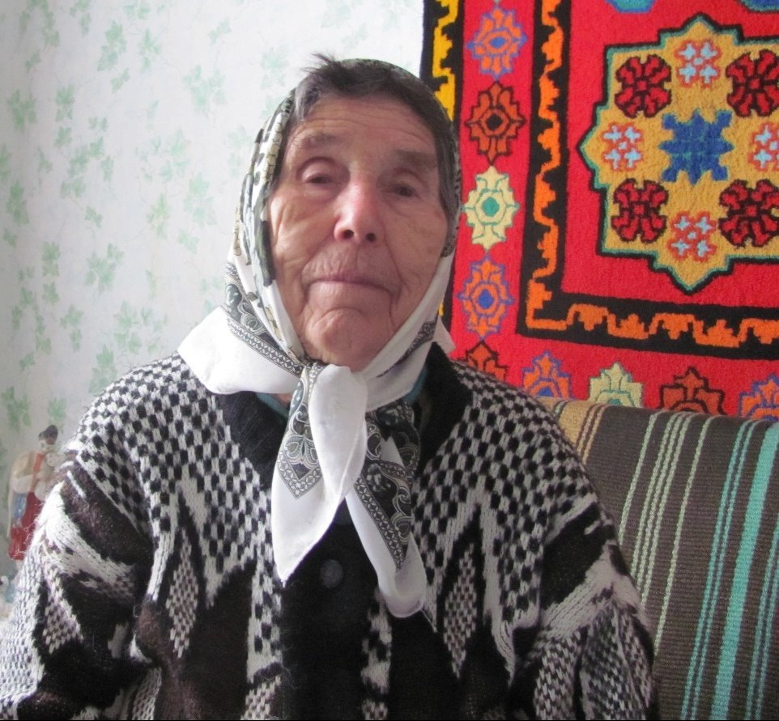
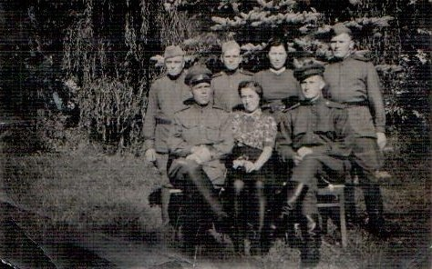
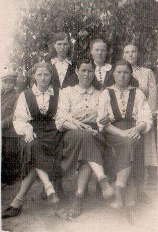

Кунцевич (Михновец) Любовь Ивановна
🏡 1. Семья и довоенное детство
Родители, Иван Евсеевич и Евдокия Фёдоровна, работали в колхозе. В семье росли четверо детей: Владимир, Михаил, Елена и Любовь.
⚡ 2. Начало войны и оккупация родного края
В феврале 1943 г. вся семья находилась в партизанах. Каратели окружили и разгромили отряд. Отца, мать и двоих братьев расстреляли на глазах Любови. Сестер Елену и Любовь пощадили ради рабского труда.
⛓️ 3. Облава, арест и отправка в эшелонах
Через Старобин девушек привезли в тюрьму Потсдама: каменный мешок без еды. Через несколько дней сестер отобрал хозяин поместья Брунов (20 км от Лейпцига).
🌾 4. Рабский труд, испытания и лагеря Германии
Тяжелый полевой труд с 7 утра до сумерек. Буханка хлеба и брюква на неделю. За попытки достать мерзлую картошку в поле жестоко избивали палками. Сестры предприняли побег, но были пойманы полицией, брошены в карцер и проданы другому помещику.
🕊️ 5. Освобождение союзными и советскими войсками
В апреле 1945 г. освобождены советскими солдатами. До ноября 1945 г. работали на военном заводе и кухне армейской части.
🌱 6. Возвращение на пепелище и мирный труд
Вернулась в родную деревню Морочь — кругом одно пепелище. Жила в землянке. Переехала в Микашевичи, работала в ткацком цеху, плела корзины. Вышла замуж за Кунцевича Николая Владимировича, воспитала сына Геннадия и дочь Антонину, имеет четверых внуков.
📷 Фотографии и архивные документы (3)
Фото 17. Кунцевич Л.И., 2013 год

Фото 18. 1945 год, военная часть

Фото 19. Кунцевич Л.И., после возвращения 1945 год, Морочь